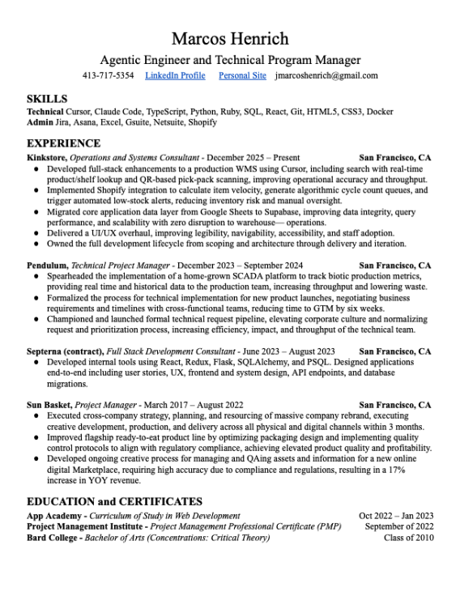
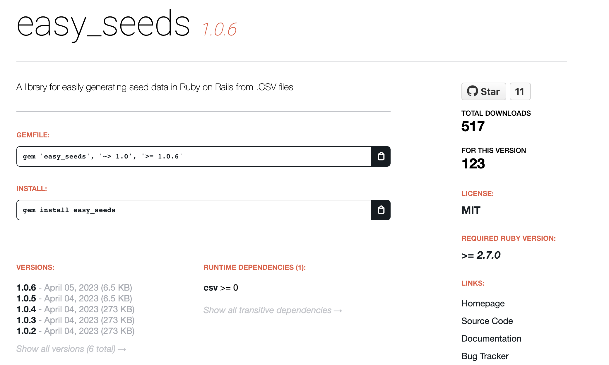
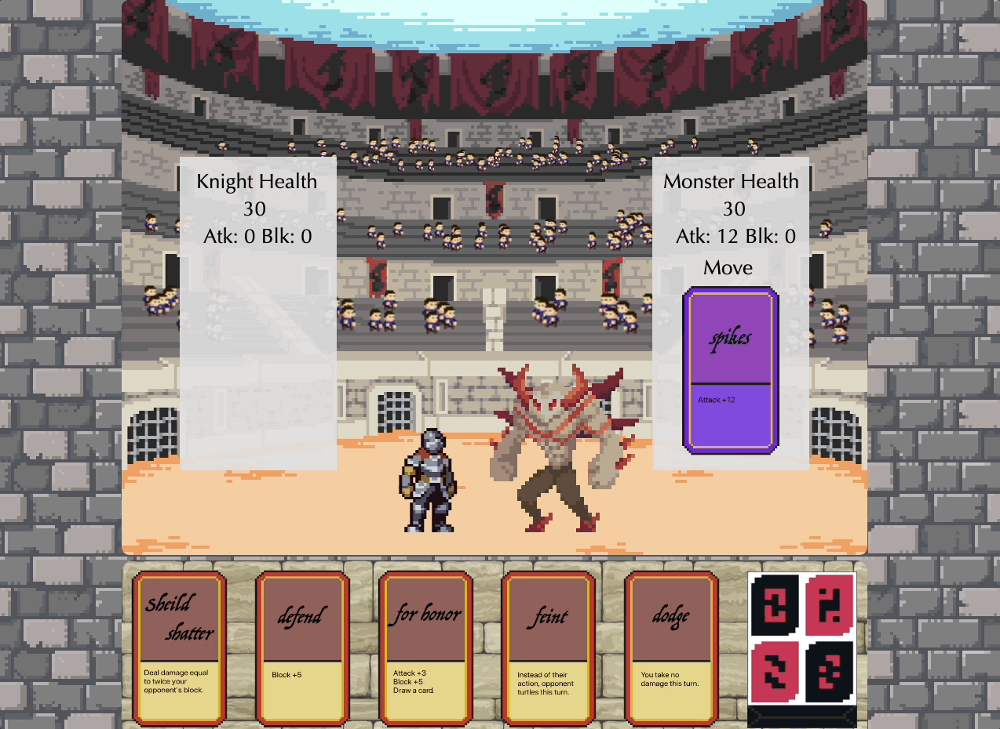

Growth Mindset
Always exploring. Every stumble is a learning opportunity, every piece of technology a chance to expand your toolset and capability.
Always exploring. Every stumble is a learning opportunity, every piece of technology a chance to expand your toolset and capability.
I'm great with people. I can collaborate with peers from any background, and more importantly, I can get them to work with each other.
Punctual and paying attention. Attuned to schedules, timelines, and the steps needed to deliver quality products on time and under budget.
Actively coding, learning, and developing my skills with new projects. Strong technical foundations lead to quality results.
I'm a multinational raised in the United States, Brazil, and Ecuador. I moved to the United States permanently to attend Bard College at Simon's Rock at 16 years old.
After working for years as a Production Manager at a printing facility in Chicago, I moved to California to join a startup that needed someone with a sense of process and direction to bring structure to the chaos. From 2017 to 2022 I worked with the talented team at Sunbasket, starting as a graphic design temp and graduating as a project manager refactoring core business and operations processes.
In 2022 I got my PMP and decided to pursue software engineering to increase my ability to drive impact and join teams and projects that contribute real human value. Since then, I have worked as a freelance Software Developer and a Technical Program Manager at rapidly scaling biotech firms enhancing operations processes, building SCADA systems, establishing data governance and much more.
I've embraced Agentic Engineering as the new paradigm for software development and have taken the leap into learning to master that technology so I can deliver better tools faster and become a resource for my peers and community.
I am currently working with a rapidly scaling eCommerce firm guiding their team in collaborative agentic development of an ERP, and upleveling the AI practices of the wider org.


Simulated environment / immersive experience of a Pacific kelp biome. Emergent, interconnected ecosystem powered by vanilla Javascript and Canvas.

Open Source Ruby Gem that enables importing CSV files to seed data and models in Rails. Developed in collaboration with Max Fong.

Enter the Arena and prove your worth against the most powerful knights in the realm. Powered by vanilla Javascript.